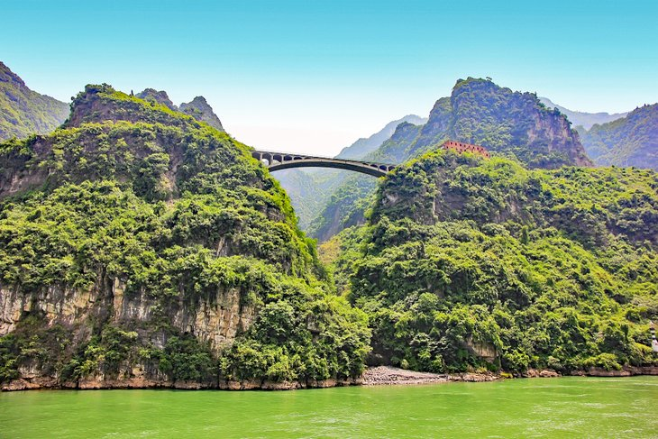

CHINA TOURIST PLACES TO VISIT
 |
GREAT WALL OF CHINA 1. The Great Wall of China is 21,196 kilometers long.
|
 |
IMPERIAL PALACE,Beijing,CHINA1. An estimated 1 million laborers worked to complete the structure. 2. The Forbidden City is a masterpiece of Chinese architecture. 3. The Forbidden City is China's most popular single-site tourist attraction. 4. You can visit the Forbidden City without a visa! 5. The Palace Museum is one of the world's largest cultural museums. FOR MORE INFORMATION YOU CAN REFER TO THIS PAGE |
|  | YANGTAZE RIVER ,CHINA |